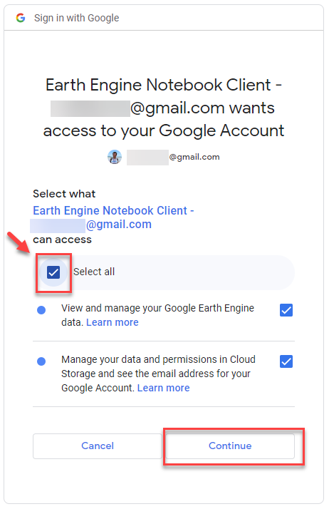

Introduction#
Welcome to MATILDA, the Python workflow for Modeling Water Resources in Glacierized Catchments! In the following series of notebooks you will go all the way from data acquisition to the analysis of climate change impacts on your catchment. Every notebook tackles an individual step in the modeling workflow.
Notebook 1 - Catchment Delineation delineates your catchment and downloads all types of static data such as the digital elevation model, glacier outlines, and ice thickness.
Notebook 2 - Forcing data downloads and processes ERA5-Land reanalysis data to calibrate the glacio-hydrological model.
Notebook 3 - CMIP6 downloads and processes CMIP6 climate model data for a historical period and two emission pathways until 2100.
Notebook 4 - MATILDA runs a glacio-hydrological model for your catchment with default parameters and guides you through the calibration process.
Notebook 5 - MATILDA scenarios uses your calibrated parameter set so run the model for all CMIP6 ensemble members.
Notebook 6 - Analysis visualizes the ensemble output in interactive plots.
Notebook 7 - Climate Change Indicators calculates a set of meteorological and hydrological indicators from your results and visualizes them in interactive figures.
Have fun exploring!
Signing up for Google Earth Engine#
Much of the public data acquisition will be done using the Google Earth Engine Python API. This not only allows us to access an unique collection of public datasets but to “outsource” most of their preprocessing to Google servers. If you want to use this service, you need to sign up for an Earth Engine Account. You can do this with an existing Google Account or create a new one with any mail account.
To start creating your account click on Get Started in the top right corner.

Log into your Google account or create one, if you don’t have a Google account yet.

Once you signed into your Google account, you can register your first project. Click on Register a Noncommercial or Commercial Cloud project.

Next, choose how you want to use Earth Engine. Click on Unpaid usage and choose Academia & Research.

Now you have the option to create a new Google Cloud Project or to choose an existing Google Cloud Project. Create a new project by clicking on Create a new Google Cloud Project. Then you’ll have to choose your organization, create a project ID and optionally choose a project name. Click on CONTINUE TO SUMMARY.

Before your project is registered you might be asked to accept the Terms of Services if you haven’t done so already. Click on Cloud Terms of Services. You will be redirected to your Google account where you can accept the terms of services.

Confirm your Cloud Project information by clicking on CONFIRM AND CONTINUE.

Confirm your Cloud Project information by clicking on CONFIRM AND CONTINUE.
Authorize access for Google Earth Engine#
Choose account and project and then click on GENERATE TOKEN.

After that, you will need to sign into your Google Account. You’ll get a notification saying that Google hasn’t verified this app. Click continue.

Next, choose what Earth Engine Notebook Client can access. Click continue. 
Copy the authorisation code and paste it on the Earth Engine Notebook.

You should get a message saying Successfully saved authorization token.